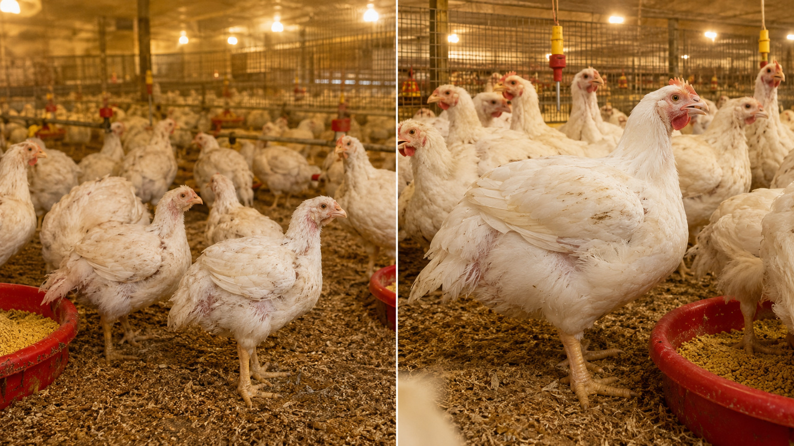

FCR 1.80→1.62｜枯草菌源蛋白酶强化料｜屠体率+5.88%｜肌肉抗氧化+21.5%｜无抗养殖合规

行业均值65%以下，深加工厂只给普通收购价，达不到出口标准溢价门槛。每公斤胸肉差价0.8–1.5元直接影响结算。
白羽肉鸡基准FCR 1.8以上，豆粕价格波动直接穿透利润。FCR每改善0.1，万羽鸡场每批节省饲料约5吨。
肌肉氧化应激导致PSE肉（苍白软化渗水），被加工厂打折扣收购，滴水损失超过2%时经济损失显著。

肥力寶®肉鸡强化料，每吨全价饲料添加 1 kg。
⚠️ 二阶段预混（必须）：1 kg直接投入1吨饲料极易分布不均，导致部分鸡只摄入不足或过量。
① 先将1 kg强化料与50–100 kg载体（米糠、麦麸或少量全价料）充分混合制成预混料；
② 再将预混料加入整批饲料搅拌均匀（建议卧式搅拌机≥5分钟）。
确保全栏每只鸡每餐均匀摄入，避免因不均匀影响整批效益。

豆粕中大豆球蛋白（Glycinin）的疏水核心区包埋Val/Leu/Ile，常规消化酶难以完全释放。枯草菌源蛋白酶切割β-sheet结构，使BCAA释放率提升显著。BCAA激活骨骼肌mTORC1→p70S6K1→4EBP1通路，上调肌球蛋白重链（MHC IIb）合成速率，胸大肌卫星细胞增殖加速。
Tesseraud et al., J. Nutr. 2003；MDPI 2014；PMC 2018
枯草菌源蛋白酶水解产生的特定二肽（尤其Ile-Pro、Val-Tyr）可下调肝脏脂肪酸合酶（FAS）及乙酰CoA羧化酶（ACC）基因表达，减少皮下脂肪de novo合成。同时激活AMPK→PGC-1α轴，提升线粒体β氧化效率，ATP供给增加使单位饲料转化肉量上升。
MDPI 2014；Sklan & Noy, Poult. Sci. 2003
快速生长白羽肉鸡在出栏前期（35–42天）肌肉代谢强度高，ROS（活性氧）积累是PSE肉发生的主因之一。枯草菌源蛋白酶水解产生的小肽可激活Nrf2-ARE通路，上调超氧化物歧化酶（SOD）及谷胱甘肽过氧化物酶（GPx）表达，肌肉抗氧化能力提升+21.5%（MDPI 2014）。宰后pH值稳定，滴水损失减少，L*值（亮度）下降，达到出口品质标准。
MDPI 2014；Fletcher, Poult. Sci. 2002

| 品种 | 主要分布 | 出栏日龄 | 胸肉比例改善 | 屠体率改善 | 特别效益 |
|---|---|---|---|---|---|
| 艾拔益加（AA+） | 全国广泛 | 42–45天 | +12.15% | +5.88% | 肉质抗氧化+21.5% |
| 科宝（Cobb）500 | 广东、福建、山东 | 42天 | +12.15% | +5.88% | FCR显著改善，滴水损失↓ |
| 罗斯（Ross）308 | 华北、山东、河南 | 42–45天 | +12.15% | +5.88% | 滴水损失↓，出口品质达标 |
| 哈巴德（Hubbard） | 南方省份 | 42–48天 | 显著改善 | 显著改善 | 全程效益稳定 |
※ 数据来自台湾及中国大陆田间对照试验（n≥500羽/组），基准值参照各品系育种公司标准
※ 田间试验参考值，实际收益因管理条件而异
以万羽批次、饲料均价¥3.2/kg估算
| 出栏规模（羽/批） | 每批省饲料 | 胸肉溢价收益 | 合计年增收（6批） |
|---|---|---|---|
| 10,000羽 | 约5吨 | ¥4–8万 | ¥50–90万 |
| 50,000羽 | 约25吨 | ¥20–40万 | ¥240–450万 |
| 100,000羽 | 约50吨 | ¥40–80万 | ¥480–900万 |
※ 省饲料=(1.80−1.62)×出栏体重×规模；溢价=胸肉增量×0.8–1.5元/kg；白羽肉鸡年6批

规模：500–1,000羽（实验组+对照组）
周期：一批出栏（42–45天）
观测：出栏体重、FCR、屠宰胸肉比例
风险：极低，不影响现有生产流程
规模：半栋鸡舍（≥5,000羽）
周期：2批出栏
观测：加工厂结算价格、滴水损失、PSE比例
产出：可获取完整结算数据计算实际ROI
规模：全场
周期：持续使用
优化：第3批后可评估豆粕减量空间（约8–12 kg/吨），BCAA消化率改善可支持赖氨酸轻度降低
价值：无抗合规+胸肉溢价+成本优化
土鸡16–22周出栏，料肉比3.3–3.5，饲料占成本超60%，豆粕波动直接穿透利润。
活禽市场品相差，只能按普通价结算，与优质土鸡的价差每公斤可达3–8元。
92–95%成活率区间波动，每批损耗差异吃掉利润，难以稳定成本。

肥力寶®土鸡强化料，每吨全价饲料添加 1 kg，建议全程添加（16–22周）。
⚠️ 二阶段预混（必须）：同白羽肉鸡操作要求，1 kg须先与50–100 kg载体混合后再加入整批饲料，确保全群均匀摄入。

土鸡慢肌纤维（Type I）依赖线粒体有氧氧化供能，对BCAA中Val/Ile的需求尤为突出（作为TCA循环补充底物）。枯草菌源蛋白酶提升Val/Ile释放率，直接强化线粒体柠檬酸循环通量，ATP产生效率提升，驱动出栏体重在长周期内稳定增长。
Listrat et al., Animals 2016；MDPI 2014
土鸡活禽市场高度重视外观（羽毛光泽、皮肤色泽、体型均匀度）。羽毛角蛋白（β-keratin）及皮肤胶原蛋白均以甘氨酸（Gly）、脯氨酸（Pro）、羟脯氨酸（Hyp）为主要前体。枯草菌源蛋白酶水解豆粕中不易消化的疏水蛋白区域，释放Gly/Pro前体，改善角蛋白合成原料供应。
Wang et al., Anim. Feed Sci. 2021
土鸡饲养周期长（16–22周），后肠蛋白发酵积累时间更长，慢性肠道炎症风险高于短周期白羽肉鸡。枯草菌源蛋白酶减少后肠未消化蛋白底物，降低产气荚膜梭菌（C. perfringens）等有害菌增殖压力，紧密连接蛋白保护机制同样适用于长周期饲养。
Wang et al., J. Anim. Sci. 2019

| 品种 | 主要分布 | 出栏周龄 | 增重改善 | 料肉比改善 | 成活率改善 |
|---|---|---|---|---|---|
| 红羽土鸡 | 广东、广西、福建 | 16–20周 | +5–8% | -3–5% | +2–3% |
| 黑羽土鸡 | 浙江、湖南、广西 | 16–22周 | +5–8% | -3–5% | +2–3% |
| 三黄鸡 | 广东、广西 | 14–18周 | 显著改善 | 显著改善 | 显著改善 |
| 乌鸡（乌骨鸡） | 江西、浙江、湖北 | 20–24周 | 改善显著 | 改善显著 | 改善显著 |

※ 本页数据来自田间试验（对照组设计，n≥500羽/组）及已发表文献（MDPI 2014、PMC 2018）。白羽肉鸡数据基于AA+、Cobb 500、Ross 308品种，土鸡数据基于红羽、黑羽、三黄鸡品种。FCR及胸肉改善幅度为实测均值，实际效果因饲养管理条件、品种、季节及饲料配方而存在差异。枯草菌源蛋白酶属微生物来源饲料添加剂，已列入农业农村部《饲料添加剂品种目录》，使用前请确认符合当地法规。
枯草菌源蛋白酶切割β-sheet結構，釋放Val/Leu/Ile，激活骨骼肌mTORC1→p70S6K1→4EBP1通路，上調MHC IIb合成速率，胸大肌衛星細胞增殖加速。
Tesseraud et al., J. Nutr. 2003；MDPI 2014
特定二肽（Ile-Pro、Val-Tyr）下調肝臟FAS及ACC基因表達，激活AMPK→PGC-1α軸，提升線粒體β氧化效率，單位飼料轉化肉量上升。
MDPI 2014；Sklan & Noy, Poult. Sci. 2003
小肽激活Nrf2-ARE通路，上調SOD及GPx表達，肌肉抗氧化能力+21.5%（MDPI 2014）。宰後pH穩定，滴水損失減少，L*值下降，達出口品質標準。
MDPI 2014；Fletcher, Poult. Sci. 2002
| 品種 | 主要分布 | 出欄日齡 | 胸肉比例改善 | 屠體率改善 | 特別效益 |
|---|---|---|---|---|---|
| 艾拔益加（AA+） | 全國廣泛 | 42–45天 | +12.15% | +5.88% | 肉質抗氧化+21.5% |
| 科寶（Cobb）500 | 廣東、福建、山東 | 42天 | +12.15% | +5.88% | FCR顯著改善 |
| 羅斯（Ross）308 | 華北、山東、河南 | 42–45天 | +12.15% | +5.88% | 滴水損失↓ |
| 哈巴德（Hubbard） | 南方省份 | 42–48天 | 顯著改善 | 顯著改善 | 全程效益穩定 |
※ 田間試驗參考值，實際收益因管理條件而異
| 出欄規模（羽/批） | 每批省飼料 | 胸肉溢價收益 | 合計年增收（6批） |
|---|---|---|---|
| 10,000羽 | 約5噸 | ¥4–8萬 | ¥50–90萬 |
| 50,000羽 | 約25噸 | ¥20–40萬 | ¥240–450萬 |
土雞16–22週出欄，料肉比3.3–3.5，飼料佔成本超60%。
活禽市場品相差，每公斤差價可達3–8元。
92–95%成活率區間波動，每批損耗差異吃掉利潤。
肥力寶®土雞強化料，每噸全價飼料添加 1 kg，建議全程添加（16–22週）。
⚠️ 二階段預混（必須）：1 kg須先與50–100 kg載體混合後再加入整批飼料，確保全群均勻攝入，避免分布不均影響整批效益。
BCAA（尤其Val/Ile）作為TCA循環補充底物，強化線粒體柠檬酸循環通量，ATP產生效率提升，驅動長週期內持續穩定增重。
Listrat et al., Animals 2016
枯草菌源蛋白酶釋放Gly/Pro前體，改善角蛋白及膠原蛋白合成原料供應，羽毛光澤及皮膚色澤直接受益。
Wang et al., Anim. Feed Sci. 2021
長週期飼養（16–22週）後腸蛋白發酵積累時間長，枯草菌源蛋白酶減少產氣莢膜梭菌增殖壓力，緊密連接蛋白保護，成活率穩定。
Wang et al., J. Anim. Sci. 2019
| 品種 | 主要分布 | 出欄週齡 | 增重改善 | 料肉比改善 | 成活率改善 |
|---|---|---|---|---|---|
| 紅羽土雞 | 廣東、廣西、福建 | 16–20週 | +5–8% | -3–5% | +2–3% |
| 黑羽土雞 | 浙江、湖南、廣西 | 16–22週 | +5–8% | -3–5% | +2–3% |
| 三黃雞 | 廣東、廣西 | 14–18週 | 顯著改善 | 顯著改善 | 顯著改善 |
| 烏雞（烏骨雞） | 江西、浙江、湖北 | 20–24週 | 改善顯著 | 改善顯著 | 改善顯著 |
※ 本頁數據來自田間試驗（對照組設計，n≥500羽/組）及已發表文獻（MDPI 2014、PMC 2018）。FCR及胸肉改善幅度為實測均值，實際效果因飼養管理條件、品種及飼料配方而存在差異。
※ Field trial reference values. Actual returns depend on management.
※ Data from field trials (control group design, n≥500 birds/group) and published literature (MDPI 2014, PMC 2018). Results vary by farm management, genetics, season, and feed formula. Subtilisin protease listed in MARA Feed Additive Catalogue for poultry use.